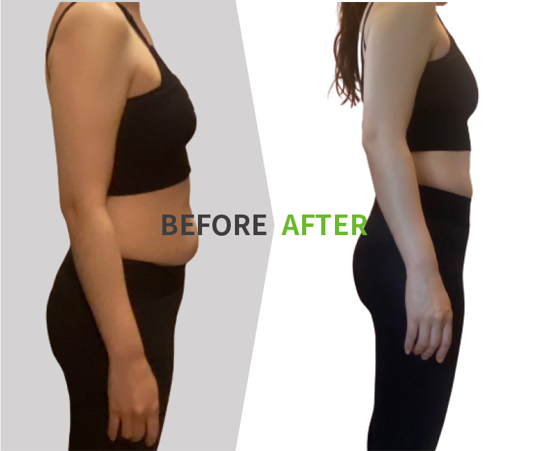
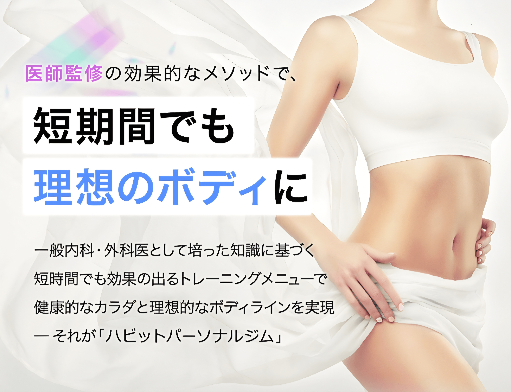
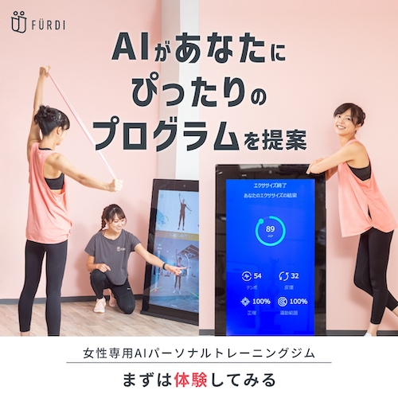

はじめに栄養士としての立場
私は栄養士として、基本はインナービューティー（食事改善）を推奨しています。
しかし、「式まで時間がない」「自力ではどうにもならないパーツがある」場合は、プロの手を借りるのが最も賢い選択です。
ここでは、単なるダイエットジムではなく、「ドレスを美しく着こなす」ことに特化した5つの選択肢を厳選しました。
ジム選びで失敗するパターン
- 痩せたけど胸まで落ちて、ラインが寂しくなってしまった
- 筋トレで肩幅が広くなり過ぎてドレスが似合わない
- 厳しい食事制限で体重は落ちたけど、肌がボロボロに…
こうならないために、自分の「目的」に合った場所を選んでください
徹底比較｜あなたに合うのは？
特徴が全く違う5社の比較です。直感で「これだ！」と思うものを見つけてください。
| 施設名 | 向いている人 | 最大の特徴 | エリア |
|---|---|---|---|
| MMM | 胸を残したい 上半身重視 |
バストアップ ×痩身 |
東京 (六本木等) |
| ミス・パリ | 運動嫌い 癒やされたい |
寝たまま痩せる エステ技術 |
全国 |
| ARISANFIT | ライン重視 姿勢改善 |
ミスコン流 骨格診断 |
東京 (渋谷/池袋) |
| ハビット | 結果重視 損したくない |
痩せなければ 全額返金 |
東京 (恵比寿等) |
| FURDI | 忙しい人 安く済ませたい |
AI搭載 通い放題 |
全国 |
目的別・詳細ガイド
Type 1：バストアップ＆二の腕

「痩せたいけど、胸は残したい」花嫁の理想形
MMM（トリプルエム）
- ダイエットで胸が小さくなるのが怖い
- 二の腕や背中のはみ肉を消したい
- 女性トレーナーに担当してほしい
六本木・表参道などの一等地に構える完全プライベートジム。「バストアップ」と「痩身」を同時に叶える独自メソッドは花嫁に最適です。
編集メモ
ここはジムというより「ボディメイクサロン」です。ただ体重を落とすだけでなく、デコルテをふっくらさせながらウエストを絞る技術は感動もの。ドレス姿のクオリティが段違いになります。
MMMの体験を見る ＞
ここはジムというより「ボディメイクサロン」です。ただ体重を落とすだけでなく、デコルテをふっくらさせながらウエストを絞る技術は感動もの。ドレス姿のクオリティが段違いになります。
Type 2：運動なしのエステ


「運動は絶対ムリ」な方の最終手段
ミス・パリ ダイエットセンター
- 運動は続かない・汗をかきたくない
- 結婚式準備の疲れも癒やしたい
- 科学的なアプローチで脂肪を燃やしたい
「寝ているだけ」で有酸素運動効果を得られるマシンや、プロのハンド技術でセルライトをケア。優雅な気分で痩せられます。
編集メモ
ジムが「努力」なら、ここは「魔法」に近いです。医学・科学に基づいた痩身理論なので、エステといえどしっかり数値が変わります。体験に行くだけでも全身のむくみが取れてスッキリしますよ
ミス・パリの体験＞
ジムが「努力」なら、ここは「魔法」に近いです。医学・科学に基づいた痩身理論なので、エステといえどしっかり数値が変わります。体験に行くだけでも全身のむくみが取れてスッキリしますよ
Type 3：姿勢＆ライン重視

ミスコン日本一のメソッドで「骨格」から整える
ARISANFIT（アリサンフィット）
- 体重より「見た目」を変えたい
- 過度な食事制限は絶対にイヤだ
- 自分の「骨格タイプ」を知りたい
渋谷・池袋エリア。初心者に優しい隠れ家ジム。無理な重量を持たず、ドレスが映えるラインを作ります。
編集メモ
栄養士として一番怖い「過度な食事制限」を強制されず、健康的に綺麗になれます。まずはここでプロの骨格診断を無料で受けて、自分の体の癖を知るのが一番コスパが良いです
無料体験の詳細を見る ＞
栄養士として一番怖い「過度な食事制限」を強制されず、健康的に綺麗になれます。まずはここでプロの骨格診断を無料で受けて、自分の体の癖を知るのが一番コスパが良いです
Type 4：全額返金保証・コスパ


痩せなければ「全額返金」。圧倒的自信。
ハビットパーソナルジム
- お金を払って結果が出ないのが一番怖い
- 医師監修のメソッドで安全に痩せたい
- 月額5万円台〜と費用を抑えたい
「2ヶ月で目標体重に届かなければ全額返金」という驚きの保証制度。コスパと結果を両立したい堅実派に。
編集メモ
返金保証があるのは、それだけ結果を出す自信がある証拠。「結婚式でお金がかかるから、絶対に損をしたくない！」という花嫁様に一番おすすめの、リスクゼロな選択肢です。
返金保証の詳細を見る ＞
返金保証があるのは、それだけ結果を出す自信がある証拠。「結婚式でお金がかかるから、絶対に損をしたくない！」という花嫁様に一番おすすめの、リスクゼロな選択肢です。
Type 5：忙しい＆マイペース


AIトレーナー×通い放題。現代的なスマートジム
FURDI（ファディー）
- 仕事が不規則で予約が取りづらい
- トレーナーと喋るのが少し苦手
- 短時間（30分）でサクッと終わらせたい
全国展開。AI（人工知能）マシン×人間のトレーナーによる新感覚の女性専用ジム。予約不要で好きな時に通えます。
編集メモ
AI主導なので「担当トレーナーとの相性」に悩みません。予約なしで隙間時間に行けるので、準備で忙しい花嫁さんのリフレッシュにも最適です！
AI無料体験を予約する ＞
AI主導なので「担当トレーナーとの相性」に悩みません。予約なしで隙間時間に行けるので、準備で忙しい花嫁さんのリフレッシュにも最適です！
その他の選択肢
下半身・脚やせ特化
マーメイドドレスを着るならここ。
医師×トレーナー共同開発の「脚やせ」専門メソッド。
ジムと食事改善どっち優先？
ジムで外側（筋肉）のラインを整え、
内側の細胞（肌ツヤやむくみ）は食事で整える。
これが、花嫁が最も美しくなる最短ルートです。
ジム通いと並行して絶対に読んでほしい
『一生太らない花嫁バイブル【完全版】』はこちら
NEXT